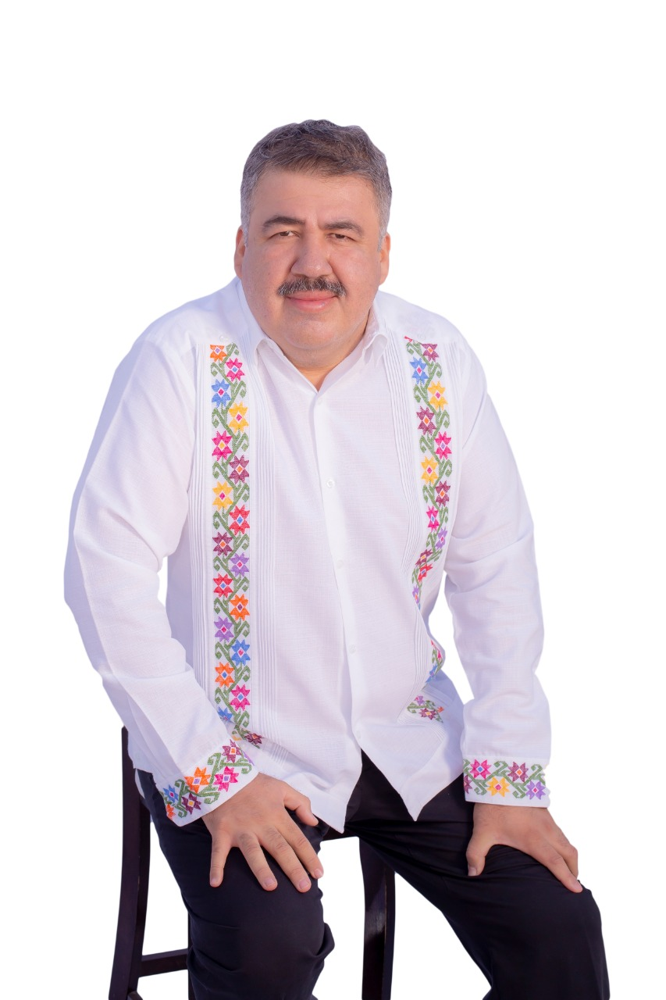

<div class="card1 card mb-3 d-flex align-items-center" style="max-width: 90%;">
    <div class="row g-0">
      <div class="col-md-4">
        <figure class="figure">
            
           </figure>
      </div>
      <div class="col-md-6">
        <div class="card-body">
          <h5 class="card-title">Acerca de mi</h5>
          <br> <br> 
          <p class="card-text">Lugar y fecha de nacimiemto: Tlapa de Comonfort Guerrero
            8 de agosto de 1976. edad 44 años
            
            casado con Edith parra desde hace 20 años
            
            padre orgulloso de Sergio emiliano y Jose carlos.
            
            
            realiza sus estudios de educacion basica en Tlapa de Comonfort.
            
            su bachillerato lo estudia en la preparatoria comandante ernesto che guevara de chilpancingo gro.
            
            sus estudios profesionales los inicia en la universidad autonoma de guerrero en la facultad de derecho dejandolos truncos en 1999, concluyendolos en la universidad latinoamericana en 2012 como licenciado en derecho.
            
            
            se afilio al pri en el año 1994 27 años de orgullosa militancia donde se ha mantenido orgulloso
            
            ha sido funcionario del gobierno estatal 
            y municipal
            regidor del ayuntamiento 2002 2005
            
            dirigente del frente juvenil revolucionario
            presidente del pri en tlapa 2017 2020
            
            coordinador electoral desde 2002
            
            representante del pri ante los organos electorales 2002 hasta 2021.
            </p>
          
        </div>
      </div>
    </div>
  </div>